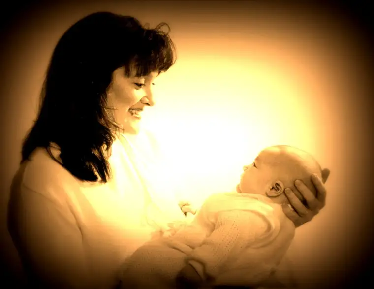
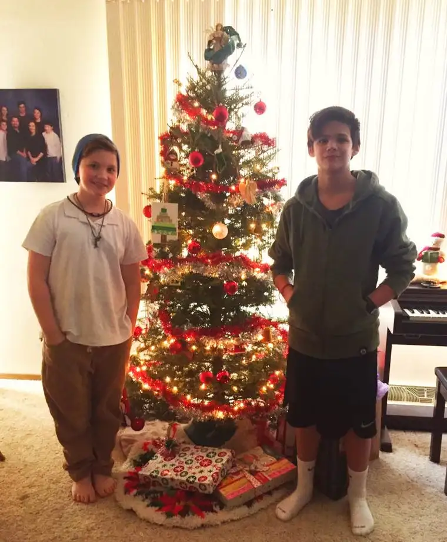

The other day, I glimpsed an image of the first baby of our oldest godchild; a girl — woman now — with whom we’ve been separated by miles and years. And yet what a beautiful sight to behold, this new child that she had helped bring into the world. It seemed not so very long ago that she was a little girl, visiting us in our small first home, eager to peek at our new babe. Her own child came into this world the same month as our firstborn, the same month we celebrate Jesus’ birth.
I was struck by his open eyes, which seemed to be searching hard, and asking deep questions. Who am I? Where am I? What is this world in which I find myself?
We can’t imagine it; none of our memories go back that far. It’s hard to conceive that we begin knowing just the warmth of our mother’s wombs. It must be an incredible undertaking for the brain to suddenly have so much stimuli to process. Slowly is how we must unfold into this big world.
Seeing that new baby’s eyes looking at the world, so innocent but so wise at the same time, brought back memories of my own babies looking into my eyes in that same searching way.

This is my middle son, Adam, one of my most thoughtful kids. He takes in the world with much discernment. He does now, and he did then. I find the way he is studying my face so beautiful. There is a connection here that remains today. I feel blessed by it.
And I can’t help but think of Jesus. Though he was God, he was also fully human. It’s nearly impossible to comprehend. The other day, one of my older kids was trying to convince me that if she missed Christmas Mass, Jesus wouldn’t care. “He’s just a baby,” she said, “so what does it matter?”
Deep down, she knows. But she thought she’d try. Maybe she just wanted to see what I’d say. Maybe she was testing me.
“He is just a baby, yes, but he is also the savior of the world!” I responded. “A savior who aches to feel you near him. He is just a baby, but not just any baby.”
Later, I was thinking about our goddaughter’s baby, and about baby Jesus; about the awakening that happens with bright eyes shining, looking, wondering. When the eyes of the newborn pop open, so alert, it is a beautiful, magical, wondrous time. It’s as if the baby is trying to take in everything. Suddenly, everything has changed. They are fully in our world now and there is so much to see! It’s like they are trying to make up for lost time.
As the mother who birthed each of our five children, I don’t know if I was as reflective about this process as I am now that I’m not just hours from the most intense experiences of my life. Seeing it all from a distance, I am able to revel anew in the remembrance and reality of the awakening of a child in those first hours after birth. I think of Jesus, wide-eyed and wondering. What did his parents think as he looked at them for the first time? After all, they already knew how special he was; that he had come into the world with a mission unlike any other before, or after.
“She will bear a son and you are to name him Jesus,” the angel Gabriel had said to Joseph in his prophetic dream just months before, “because he will save his people from their sins.”
His people. That can only mean one thing. That he is God.
And that’s it — that’s why this baby wants us near. Without us coming near to him, he cannot fulfill his purpose. So yes, dear child of mine, he is but a baby, and yet he is so much more. You know that, and someday, I pray, you will embrace it. For now, it’s okay to just accept his littleness and draw near, and not think so much about the overwhelming reality of it all.
In the middle of my own pondering about how Jesus, like our goddaughter’s new baby and like our own children, awaken to this world slowly, with great wonder in their eyes, I can’t help but think about our own awakenings that happen every day. And how, without God, we could never make sense of this world. We would continue searching but rather than with light in our eyes, our eyes would reflect only a hopeless vacancy. It is because of the light, reflected in part and symbolically by the Star above, that we can begin to make sense of things, and slowly find our own purpose in this world, and the next.
The other day on Facebook, I asked a simple question: What is the song on your heart this Christmas season? A lot of titles of great tunes came back, but this one, new to me, drew me in. In listening, might you be seized with the wonder of this time of year, and the miracles about to unfold. “Be Born In Me” by Francesca Battitstelli.
When Jesus, the babe, awakens, we awaken with him. May our awakening be met with a world full of hope that we ourselves have helped unleash.

And speaking of…I kept the tree fairly bare, hoping the kids would find joy in decorating it themselves, and over the weekend, our youngest and his friend took up the task. Our tree is now, as Nick says, “ornamented.” Thank you guys! It looks great!
Q4U: To what have you awakened this Advent?